아래 그림의 이차함수 y=2x2의 그래프를 y축의 방향으로 평행이동하였다. 다음은 이동 후 그래프에 대한 기록이다.
항목
기록
그래프가 지나는 점
(−2,5)
이동 방향
□
이동 거리
□
이동한 방향과 거리를 바르게 짝지은 것은?
①
y축의 양의 방향으로 3만큼
②
y축의 음의 방향으로 3만큼
③
y축의 양의 방향으로 5만큼
④
y축의 음의 방향으로 5만큼
⑤
y축의 음의 방향으로 8만큼
3.4점
어떤 이차함수의 그래프를 조사하여 다음 기록표를 만들었다.
항목
기록
축의 방정식
x=−2
꼭짓점의 위치
x축 위
y축과 만나는 점
(0,20)
그래프 위의 다른 점
(−3,t)
이 기록표에서 t의 값은?
①
−5
②
−1
③
1
④
5
⑤
20
4.4점
이차함수 y=ax2−6x−b의 그래프의 개략적인 모양이 아래 그림과 같다. 이때 일차함수 y=−ax+b의 그래프로 알맞은 것은? (단, a, b는 상수이고, 보기의 그림은 기울기와 y절편의 부호를 나타낸 개략적인 그래프이다.)
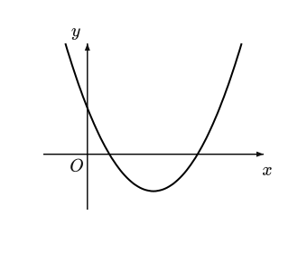
①
②
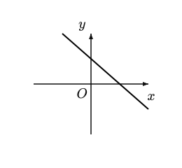
③
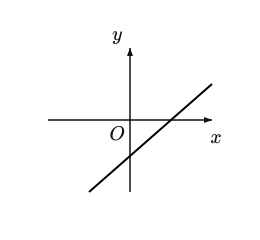
④
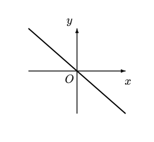
⑤
5.4점
그림과 같이 이차함수 y=x2−2x−3의 그래프가 x축과 만나는 두 점을 x좌표가 작은 것부터 차례로 A, B라 하고, 꼭짓점을 C라 하자. 삼각형 ABC의 계산 기록표를 완성하려고 한다.
기록 항목
밑변 AB의 길이
높이
넓이
계산 결과
㉠
㉡
㉢
㉠, ㉡, ㉢에 들어갈 수를 차례로 바르게 짝지은 것은?
①
2, 4, 4
②
4, 3, 6
③
4, 4, 16
④
4, 4, 8
⑤
6, 4, 12
6.4점
그림의 세 직각삼각형 PQR, STU, VWX에서 표시한 예각의 크기는 모두 θ이다. 각 삼각형의 변을 이용하여 다음 기록표를 완성하려고 한다.
사용하는 삼각형
PQR
STU
VWX
기록할 삼각비
sinθ
cosθ
tanθ
변의 길이로 나타낸 비
㉠
㉡
㉢
㉠, ㉡, ㉢에 들어갈 비를 차례로 바르게 짝지은 것은?
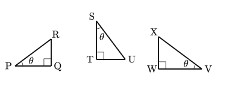
①
QRPR, SUST, VWWX
②
PRQR, TUST, VWWX
③
PRQR, SUST, VXWX
④
PQQR, SUST, VWVX
⑤
PRQR, SUST, VWWX
8.4점
다음 다섯 계산 카드를 계산한 값이 작은 것부터 큰 것 순서로 놓으려고 한다.
카드
계산식
가
2cos60∘÷sin45∘
나
sin90∘+2sin30∘
다
(1+cos60∘)(1−cos60∘)
라
tan60∘÷cos0∘
마
cos30∘÷tan30∘
세 번째 칸에 놓일 카드와 그 계산값을 바르게 짝지은 것은?
①
가, 2
②
라, 3
③
마, 23
④
나, 2
⑤
다, 43
9.4점
그림은 중심이 O이고 반지름의 길이가 1인 사분원이다. 사분원 위의 점 P에 대하여 ∠POA=54∘이고, 점 P에서 OA에 내린 수선의 발이 H이다. 점 A에서 OA에 수직인 직선과 반직선 OP가 만나는 점을 Q라 하자.
삼각비
계산에 사용할 근삿값
sin54∘
0.81
cos54∘
0.59
tan54∘
1.38
표의 근삿값으로 선분의 길이를 계산할 때, (AQ−OH)×PH의 값은? (단, 계산 결과는 소수점 아래 셋째 자리에서 반올림한다.)
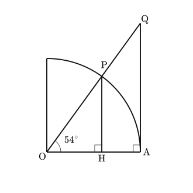
①
0.47
②
0.64
③
0.79
④
1.12
⑤
1.60
10.4점
체육관 환기창을 관측할 위치를 정하려고 한다. 두 번째 그림의 관계도에서 A는 민준의 눈, G는 발밑, C는 환기창의 중심이며, E는 창 중심 바로 아래 지면이다. 지면은 수평이고 벽은 수직이다. B는 눈높이의 수평선과 벽이 만나는 점이다.
관측 기록
값
지면에서 환기창 중심까지의 높이 CE
12.8m
민준의 눈높이 AG
1.6m
환기창 중심을 올려다본 각 ∠BAC
58∘
각
sin
cos
tan
58∘
0.8480
0.5299
1.6003
위 삼각비 표를 이용할 때 민준의 발밑에서 벽까지의 수평거리 GE는? (소수점 아래 둘째 자리에서 반올림한다.)
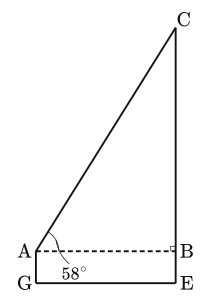
①
6.5m
②
6.8m
③
7.0m
④
7.2m
⑤
11.2m
11.4점
직각삼각형을 두 부분으로 나눈 측정 기록에서 높이만 남아 있다. 점 D는 선분 BC의 내부에 있고, 세 점 B,D,C는 이 순서로 한 직선 위에 있다.
측정 기록 ∘ ∠ACB=90∘ ∘ ∠ABD=15∘, ∠ADC=30∘ ∘ 높이 AC=3cm
이 기록에 맞게 밑변 BC의 길이를 복구한 값은?
①
(3+33)cm
②
(6+33)cm
③
(6+63)cm
④
(9+33)cm
⑤
(12+33)cm
12.4점
그림의 사각형 ABCD에서 ∠ABC=90∘, ∠CAB=45∘, ∠ACD=60∘이고, BC=8cm이다. 대각선 AC로 나눈 두 부분의 넓이를 기록한 표에서 일부 기록이 지워졌다.
영역
넓이
삼각형 ABC
지워짐
삼각형 ACD
지워짐
사각형 ABCD 전체
(32+126)cm2
지워진 기록을 복원할 때, 선분 DC의 길이는? (단, H는 점 D에서 선분 AC에 내린 수선의 발이다.)
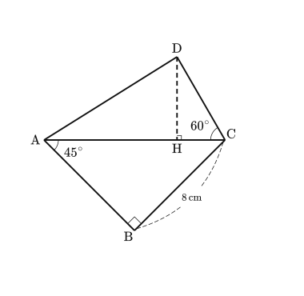
①
3cm
②
4cm
③
5cm
④
6cm
⑤
8cm
13.4점
그림은 원뿔과 그 축을 포함하는 단면의 절반인 직각삼각형 SOA이다. S는 원뿔의 꼭짓점, O는 밑면의 중심, A는 밑면의 원 위의 점이다. SA=8cm이고 ∠SAO=30∘일 때, 다음 측정 기록표를 완성하려고 한다.
기록 항목
밑면의 반지름
원뿔의 높이
원뿔의 부피
측정·계산 결과
㉠ cm
㉡ cm
㉢ cm3
㉠, ㉡, ㉢에 들어갈 수를 차례로 바르게 짝지은 것은?
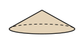
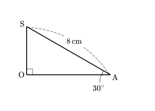
①
4, 43, 3643π
②
43, 4, 64π
③
43, 4, 192π
④
83, 4, 256π
⑤
43, 8, 128π
14.5점
직사각형 종이띠 ABCD에서 왼쪽 위 꼭짓점을 A, 왼쪽 아래를 B, 오른쪽 아래를 C, 오른쪽 위를 D라 하였다. P는 선분 AD의 내부, Q는 선분 BC의 내부에 있다. 첫 번째 그림은 접기 전의 종이띠이고, 두 번째 그림은 선분 PQ를 따라 왼쪽 부분을 접어 점 A를 점 C와 일치시킨 모습이다. 접은 뒤 B의 위치를 B′로 표시하였다.
접기 기록 ∘ 종이띠의 폭 AB=3cm ∘ 접은 뒤의 ∠CPQ=x, 0∘<x<90∘ ∘ tanx=3
이 접기 기록을 만족하는 접기 전 선분 AP의 길이는?
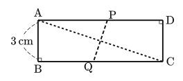
①
3cm
②
4cm
③
5cm
④
6cm
⑤
9cm
15.4점
둘레의 길이가 15πcm인 원형 전시 안내판에 길이가 12cm인 현 AB를 경계선으로 표시하였다. 현 AB와 두 호 AB 중 길이가 짧은 호로 둘러싸인 부분을 장식하려고 한다. 짧은 호 AB의 중점을 P, 현 AB의 중점을 M이라 하면 MP⊥AB이다. 장식할 부분의 높이인 MP의 길이는? (단, O는 안내판의 중심이고, P와 O는 직선 AB의 서로 반대쪽에 있다. 구하려는 높이는 0<MP<안내판의 반지름의 길이를 만족하는 짧은 높이이다.)
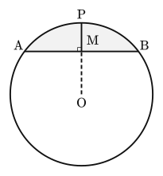
①
23cm
②
3cm
③
29cm
④
6cm
⑤
215cm
16.4점
원 O 위의 세 점 A,B,C를 이은 도형에 대하여 다음과 같은 수선 검사 기록을 얻었다.
∘ M은 현 AB 위, N은 현 AC 위의 점이다. ∘ OM⊥AB, ON⊥AC이고 OM=ON이다. ∘ ∠ABC=65∘이다.
이 기록으로 알 수 있는 현의 길이 관계와 ∠BAC의 크기를 차례로 적은 것으로 옳은 것은?
①
AB=BC, 50∘
②
AB=AC, 65∘
③
AC=BC, 50∘
④
AB=AC, 50∘
⑤
AB=AC, 115∘
17.5점
가로가 9cm, 세로가 6cm인 직사각형 창틀 모형 ABCD에 원형 장식을 끼웠다. 왼쪽 위 꼭짓점은 A, 왼쪽 아래는 B, 오른쪽 아래는 C, 오른쪽 위는 D이다. 원형 장식은 윗변 AD, 오른쪽 변 DC, 아랫변 BC에 각각 E,H,G에서 접한다. 꼭짓점 A에서 아랫변의 점 M까지 설치한 곧은 지지대 AM도 원형 장식에 F에서 접한다. M은 선분 BG의 내부에 있고, F는 선분 AM의 내부에 있다. 지지대 왼쪽의 삼각형 영역 ABM의 넓이는? (단, O는 원형 장식의 중심이며 지지대의 두께는 생각하지 않는다.)
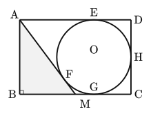
①
9cm2
②
12cm2
③
227cm2
④
15cm2
⑤
18cm2
18.4점
이차함수 y=ax2−2ax+b(a=0)의 그래프에 대한 기록이 다음과 같다.
항목
기록
그래프가 지나는 점
(−1,14)
두 상수의 합
a+b=10
꼭짓점이 놓인 직선
y=−2x+c
이 기록을 모두 만족시키는 상수 c의 값은? (단, a, b, c는 상수이다.)
①
4
②
6
③
8
④
10
⑤
14
19.7점
공원 측량 기록에서 두 측량 표지 A,B 사이의 거리만 빠져 있다. C는 관개 제어함의 위치이며, 세 위치를 이은 삼각형에 대한 기록은 다음과 같다.
측량 항목
기록
표지 B에서 제어함 C까지의 거리
306m
∠BAC
45∘
∠ABC
75∘
빠진 거리 AB를 구하고 풀이 과정을 쓰시오.
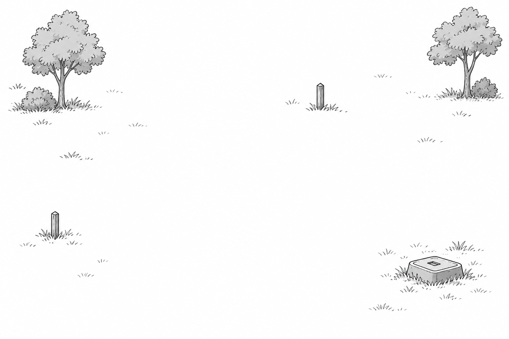
20.7점
지름이 AB이고 반지름의 길이가 6cm인 반원의 넓이를 두 부분으로 나누어 기록하려고 한다. O는 반원의 중심이고, C는 두 끝점 A,B를 제외한 반원의 호 AB 위에 있으며 ∠ABC=30∘이다.
영역 기록 ∘ 색칠한 부분: 현 CB와 두 호 CB 중 중심각이 180∘보다 작은 호 CB로 둘러싸인 부분 ∘ 구할 부분: 반원 전체에서 위의 색칠한 부분을 제외한, 색칠하지 않은 나머지 부분
색칠하지 않은 부분의 넓이를 구하고 풀이 과정을 쓰시오. (단, 답은 π와 제곱근을 포함한 정확한 값으로 나타낸다.)
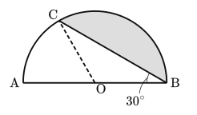
21.8점
반원의 접선 길이를 측정한 기록에서 왼쪽 높이만 빠져 있다. 그림과 같이 지름 AB를 수평으로 놓고, 왼쪽 끝점을 A, 오른쪽 끝점을 B라 하였다. AD와 BC는 각각 A,B에서의 접선이며, D와 C는 직선 AB의 위쪽, 즉 반원이 있는 쪽에 있다. CD는 반원에 E에서 접하고, E는 선분 CD의 두 끝점 사이에 있다. 또한 AD>BC>0이다.
측정 기록 ∘ 지름 AB의 길이: 10cm ∘ 오른쪽 접선 BC의 길이: 825cm
왼쪽 접선 AD의 길이를 구하고, 접선의 성질과 피타고라스 정리를 이용한 풀이 과정을 쓰시오.